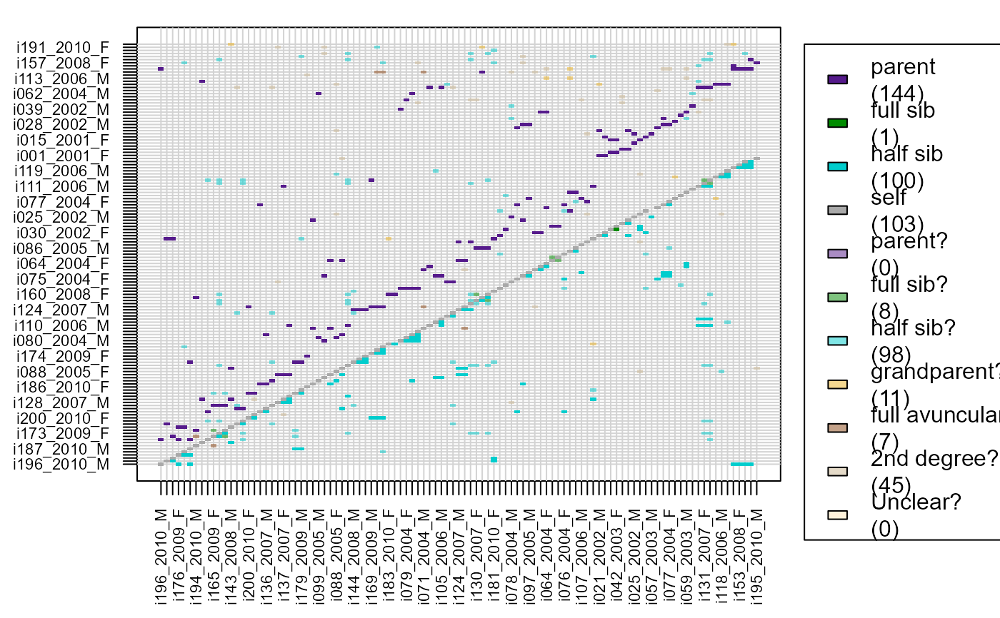
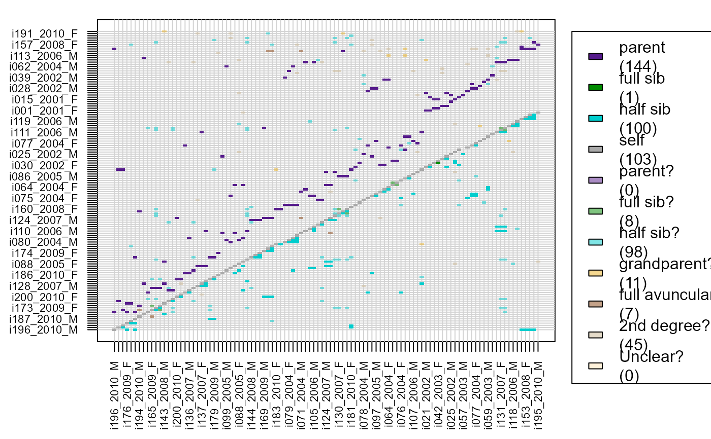

Find Putative Relatives
GetMaybeRel.RdIdentify pairs of individuals likely to be related, but not assigned as such in the provided pedigree.
Usage
GetMaybeRel(
GenoM = NULL,
SeqList = NULL,
Pedigree = NULL,
LifeHistData = NULL,
AgePrior = NULL,
Module = "par",
Complex = "full",
Herm = "no",
Err = 1e-04,
ErrFlavour = "version2.9",
Tassign = 0.5,
Tfilter = -2,
MaxPairs = 7 * nrow(GenoM),
quiet = FALSE
)Arguments
- GenoM
numeric matrix with genotype data: One row per individual, one column per SNP, coded as 0, 1, 2, missing values as a negative number or NA. You can reformat data with
GenoConvert, or use other packages to get it into a genlight object and then useas.matrix.- SeqList
list with output from
sequoia.SeqList$Pedigreeis used if present, andSeqList$PedigreeParotherwise, and overrides the input parameterPedigree. If 'Specs' is present, its elements override all input parameters with the same name. The list elements `LifeHist', `AgePriors', and `ErrM' are also used if present, and similarly override the corresponding input parameters.- Pedigree
dataframe with id - dam - sire in columns 1-3. May include non-genotyped individuals, which will be treated as dummy individuals. When provided, all likelihoods (and thus all maybe-relatives) are conditional on this pedigree. Note:
SeqList$PedigreeorSeqList$PedigreePartake precedent (for this function only).- LifeHistData
data.frame with up to 6 columns:
- ID
max. 30 characters long
- Sex
1 = female, 2 = male, 3 = unknown, 4 = hermaphrodite, other numbers or NA = unknown
- BirthYear
birth or hatching year, integer, with missing values as NA or any negative number.
- BY.min
minimum birth year, only used if BirthYear is missing
- BY.max
maximum birth year, only used if BirthYear is missing
- Year.last
Last year in which individual could have had offspring. Can e.g. in mammals be the year before death for females, and year after death for males.
"Birth year" may be in any arbitrary discrete time unit relevant to the species (day, month, decade), as long as parents are never born in the same time unit as their offspring, and only integers are used. Individuals do not need to be in the same order as in `GenoM', nor do all genotyped individuals need to be included.
- AgePrior
Agepriors matrix, as generated by
MakeAgePriorand included in thesequoiaoutput. Affects which relationships are considered possible (only those where \(P(A|R) / P(A) > 0\)).- Module
type of relatives to check for. One of
- par
parent - offspring pairs
- ped
all first and second degree relatives
When 'par', all pairs are returned that are more likely parent-offspring than unrelated, potentially including pairs that are even more likely to be otherwise related.
- Complex
Breeding system complexity. Either "full" (default), "simp" (simplified, no explicit consideration of inbred relationships), "mono" (monogamous).
- Herm
Hermaphrodites, either "no", "A" (distinguish between dam and sire role, default if at least 1 individual with sex=4), or "B" (no distinction between dam and sire role). Both of the latter deal with selfing.
- Err
assumed per-locus genotyping error rate, as a single number, or a length 3 vector with P(hom|hom), P(het|hom), P(hom|het), or a 3x3 matrix. See details below. The error rate is presumed constant across SNPs, and missingness is presumed random with respect to actual genotype. Using
Err>5% is not recommended, andErr>10% strongly discouraged. SeeErr_RADseqto convert per-allele rates at homozygous and heterozygous sites to the required length-3 vector, andErrToMfor further genotyping error details.- ErrFlavour
function that takes
Err(single number) as input, and returns a length 3 vector or 3x3 matrix, or choose from inbuilt options 'version2.9', 'version2.0', 'version1.3', or 'version1.1', referring to the sequoia version in which they were the default. Ignored ifErris a vector or matrix.- Tassign
minimum LLR required for acceptance of proposed relationship, relative to next most likely relationship. Higher values result in more conservative assignments. Must be zero or positive.
- Tfilter
threshold log10-likelihood ratio (LLR) between a proposed relationship versus unrelated, to select candidate relatives. Typically a negative value, related to the fact that unconditional likelihoods are calculated during the filtering steps. More negative values may decrease non-assignment, but will increase computational time.
- MaxPairs
the maximum number of putative pairs to return.
- quiet
logical, suppress messages.
Value
A list with
- MaybePar
A dataframe with non-assigned likely parent-offspring pairs, with columns:
ID1
ID2
TopRel: the most likely relationship, using abbreviations listed below
LLR: Log10-Likelihood Ratio between most likely and next most likely relationship
OH: Number of loci at which the two individuals are opposite homozygotes
BirthYear1: Birth year of ID1 (copied from LifeHistData)
BirthYear2
AgeDif: Age difference; BirthYear1 - BirthYear2
Sex1: Sex of ID1 (copied from LifeHistData)
Sex2
SnpdBoth: Number of loci at which the two individuals are both successfully genotyped
- MaybeRel
A dataframe with non-assigned likely pairs of relatives, with columns identical to
MaybePar- MaybeTrio
A dataframe with non-assigned parent-parent-offspring trios, with columns:
ID
parent1
parent2
TopRel: the most likely relationship, using abbreviations listed below
LLRparent1: Log10-Likelihood Ratio between parent1 being a parent of ID vs the next most likely relationship between the pair, ignoring parent2
LLRparent2: as LLRparent1
LLRpair: LLR for the parental pair, versus the next most likely configuration between the three individuals (with one or neither parent assigned)
OHparent1: Number of loci at which ID and parent1 are opposite homozygotes
OHparent2: as OHparent1
MEpair: Number of Mendelian errors between the offspring and the parent pair, includes OH as well as e.g. parents being opposing homozygotes, but the offspring not being a heterozygote. The offspring being OH with both parents is counted as 2 errors.
SNPd.id.parent1: Number of loci at which ID and parent1 are both successfully genotyped
SNPd.id.parent2: as SNPd.id.parent1
The following categories are used in column 'TopRel', indicating the most likely relationship category:
- PO
Parent-Offspring
- FS
Full Siblings
- HS
Half Siblings
- GP
GrandParent - grand-offspring
- FA
Full Avuncular (aunt/uncle)
- 2nd
2nd degree relatives, not enough information to distinguish between HS,GP and FA
- Q
Unclear, but probably 1st, 2nd or 3rd degree relatives
Details
When Module="par", the age difference of the putative pair is
temporarily set to NA so that genetic parent-offspring pairs declared to be
born in the same year may be discovered. When Module="ped", only
relationships possible given the age difference, if known from the
LifeHistData, are considered.
See also
sequoia to identify likely pairs of duplicate
genotypes and for pedigree reconstruction; GetRelM to
identify all pairs of relatives in a pedigree; CalcPairLL for
the likelihoods underlying the LLR.
Examples
if (FALSE) { # \dontrun{
# without conditioning on pedigree
MaybeRel_griffin <- GetMaybeRel(GenoM=Geno_griffin, Err=0.001, Module='par')
} # }
names(MaybeRel_griffin)
#> [1] "MaybePar" "MaybeTrio"
# conditioning on pedigree
MaybePO <- GetMaybeRel(GenoM = Geno_griffin, SeqList = SeqOUT_griffin,
Module = 'par')
#> ℹ Searching for non-assigned parent-offspring pairs ... (Module = par)
#> ℹ using Pedigree in SeqList
#> ℹ using LifeHist in SeqList
#> ℹ using AgePriors in SeqList
#> ✔ Genotype matrix looks OK! There are 142 individuals and 400 SNPs.
#> ℹ Conditioning on pedigree with 167 individuals, 122 dams and 116 sires
#> ℹ settings in SeqList$Specs will overrule input parameters
#> Transferring input pedigree ...
#> Counting opposing homozygous loci between all individuals ...
#> Checking for non-assigned Parent-Offspring pairs ...
#> 0 10 20 30 40 50 60 70 80 90 100%
#> | | | | | | | | | | |
#> ****************************************
#> ✔ Found 0 likely parent-offspring pairs, and 0, other non-assigned pairs of possible relatives
head(MaybePO$MaybePar)
#> NULL
# instead of providing the entire SeqList, one may specify the relevant
# elements separately
Maybe <- GetMaybeRel(GenoM = Geno_griffin,
Pedigree = SeqOUT_griffin$PedigreePar,
LifeHistData = LH_griffin,
Err=0.0001, Complex = "full",
Module = "ped")
#> ℹ Searching for non-assigned relative pairs ... (Module = ped)
#> ✔ Genotype matrix looks OK! There are 142 individuals and 400 SNPs.
#> ℹ Conditioning on pedigree with 142 individuals, 65 dams and 79 sires
#> ℹ Ageprior: Pedigree-based, overlapping generations, smoothed, MaxAgeParent = 5,5
#> Transferring input pedigree ...
#> Counting opposing homozygous loci between all individuals ...
#> Checking for non-assigned relatives ...
#> 0 10 20 30 40 50 60 70 80 90 100%
#> | | | | | | | | | | |
#> ****************************************
#> ✔ Found 0 likely parent-offspring pairs, and 129, other non-assigned pairs of possible relatives
head(Maybe$MaybeRel)
#> ID1 ID2 TopRel LLR OH BirthYear1 BirthYear2 AgeDif Sex1
#> 1 i081_2005_F i083_2005_M FS 5.42 16 2005 2005 0 1
#> 2 i165_2009_F i175_2009_M FS 5.34 17 2009 2009 0 1
#> 3 i131_2007_F i133_2007_F FS 5.09 8 2007 2007 0 1
#> 4 i160_2008_F i130_2007_F FS 2.25 11 2008 2007 1 1
#> 5 i158_2008_M i133_2007_F HS 17.36 10 2008 2007 1 2
#> 6 i158_2008_M i130_2007_F HS 16.15 21 2008 2007 1 2
#> Sex2 SNPdBoth
#> 1 2 392
#> 2 2 392
#> 3 1 392
#> 4 1 392
#> 5 1 392
#> 6 1 392
# visualise results, turn dataframe into matrix first:
MaybeM <- GetRelM(Pairs = Maybe$MaybeRel)
PlotRelPairs(MaybeM)
 # or combine with pedigree (note suffix '?')
RelM <- GetRelM(Pedigree =SeqOUT_griffin$PedigreePar, Pairs = Maybe$MaybeRel)
PlotRelPairs(RelM)

# or combine with pedigree (note suffix '?')
RelM <- GetRelM(Pedigree =SeqOUT_griffin$PedigreePar, Pairs = Maybe$MaybeRel)
PlotRelPairs(RelM)
